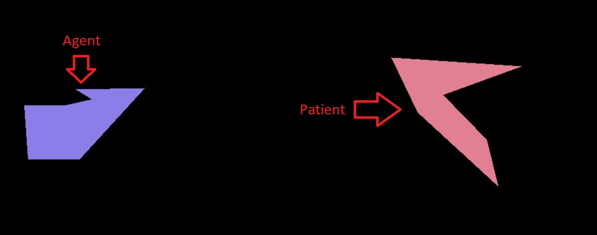
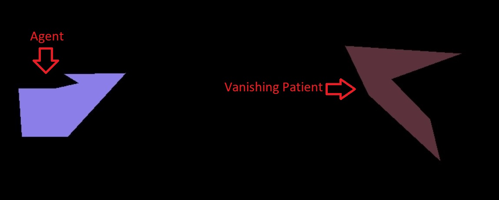

<!DOCTYPE html>
<html>
  <head>
    <title>Page</title>
    <script src="jspsych-6.3.0/jspsych.js"></script>
    <script src="jspsych-6.3.0/plugins/jspsych-html-keyboard-response.js"></script>
    <script src="jspsych-6.3.0/plugins/jspsych-html-button-response.js"></script>
    <script src="jspsych-6.3.0/plugins/jspsych-video-keyboard-response.js"></script>
    <script src="jspsych-6.3.0/plugins/jspsych-video-button-response.js"></script>
    <script src="jspsych-6.3.0/plugins/jspsych-instructions.js"></script>
    <script src="jspsych-6.3.0/plugins/jspsych-preload.js"></script>
    <script src="jspsych-6.3.0/plugins/jspsych-same-different-html.js"></script>
    <script src="jspsych-6.3.0/plugins/jspsych-survey-text.js"></script>
    <script src="jspsych-6.3.0/plugins/NewResponse.js"></script>
    <script src="jspsych-6.3.0/plugins/automaticPage.js"></script>
    <script src="jspsych-6.3.0/plugins/paymentPage.js"></script>
    <script src="jspsych-6.3.0/plugins/jspsych-fullscreen.js"></script>
    <script src="jspsych-6.3.0/plugins/practicePage.js"></script>
    <script src="jspsych-6.3.0/plugins/collidingPage.js"></script>
    <script src="jspsych-6.3.0/plugins/collidingR.js"></script>
    <script src="jquery.js"></script>
    <script src="uuid.js"></script>
    <link href="jspsych-6.3.0/css/jspsych.css" rel="stylesheet" type="text/css">
  </head>
  <body></body>
  <script>
    var nTrials=68 //(3+2)s
    var progressTrials= nTrials+9-1+2
    var currentProgress=0
    var timeline=[]
    var ID = create_UUID()
    //var videos=["Stimulus/1.mp4","Stimulus/2.mp4","Stimulus/3.mp4"]

    var videos=[]

    function saveData() {
      var xhr = new XMLHttpRequest();
      xhr.open('POST', 'write_data.php'); // change 'write_data.php' to point to php script.
      xhr.setRequestHeader('Content-Type', 'application/json');
      xhr.onload = function() {
        if(xhr.status == 200){
          //var response = JSON.parse(xhr.responseText);
          //console.log(response.success);
          console.log(xhr.responseText)
        }
      };
      xhr.send(jsPsych.data.get().filter([{trial_type: "NewResponse"}, {trial_type: "survey-text"}]).json());
    }

    for (i=1 ; i<nTrials+1 ; i++){
      videos.push("Stimulus/"+String(i)+".mp4")
    }
      videos.push("Stimulus/InstructionV.mp4")
      videos.push("Stimulus/CollisionL.mp4")
      videos.push("Stimulus/CollisionR.mp4")
    


    var preload = {
      type : "preload",
      video: videos,
      images : ["Materials/2.jpg","Materials/1.jpg"],
      message : "Loading Experiment, Please Wait.....",
      show_progress_bar:true,
      error_message : "Failed to Load the Experiment, Please Refresh the Browser."
    }

    timeline.push(preload)

    var fullScreen = {
        type : "fullscreen",
        fullscreen_mode : true,
        message: "Please press \"Continue\" to enter the full screen mode! While doing the experiment, please keep your browser in full screen mode!",
        button_label : 'Continue'
    }

    var consentForm = {
      type: "html-button-response",
      stimulus :`
    <p style="text-align:left"><b>LABORATORY FOR COMPUTATION COGNITION & DEVELOPMENT</b></p>
    <p style="text-align:left"><b>Department of Psychology</b></p>
    <p style="text-align:left"><b>Harvard University</b></p>
    <p><br></p>
    <p style="text-align:left">Dear Participants,</p>
    <br>
    <p style="text-align:left">Thank you for your interest in our study. In this study you will:</p>
    <p style="text-align:left"><b>* Watch 68 short videos of two objects colliding.</b></p>
    <p style="text-align:left"><b>* For each video, you will be asked to react when you think two objects collide.</b></p>
    <p style="text-align:left"><b>* At the end of the study, we will ask a few simple demographic questions (Optional).</b></p>
    <p style="text-align:left"><b>* The study is expected to take about 15 minutes.</b></p>
    <p style="text-align:left"><b>* During the Experiment, we will require your browser to enter and stay in the fullscreen mode.</b></p>

    <p style="text-align:left"><br>You are being asked to participate in a project being conducted by a research team at Harvard University, under the direction of Dr. Tomer Ullman. 
      We are interested in how people are able to reason quickly and in a commonsense way about the different objects and people they encounter in the world around them. A better 
      understanding of commonsense reasoning has implications for building more intelligent machines that can reason in a more human-like way, lowering risk in different physical 
      situations. During this study, you will be presented with video events. To assess your understanding of these displays, you will be asked questions and you will respond by 
      selecting an appropriate response.  
    <br>
    <br>The study will last around 15 minutes, and you will be asked to watch 68 short videos. Your participation in this study is completely voluntary. You may refuse to participate, or you may choose to withdraw from 
      participation at any time, without penalty or loss of benefit to which you are otherwise entitled. There has been no harm to people involved in this study and there are 
      no risks associated with participation.
    <br>
    <br>All information collected from the study will be associated with a Prolific Subject ID, which is the only identifying
      data you will be requested to provide. Only researchers associated with this project will have access to the data. In order to make a research transparent to the 
      scientific and broader community our study design and unidentifiable data are made publicly available on Open Science Framework, a network of research materials and collaboration 
      software, but your data will not be in anyway identifiable.
    <br>
    <br>We will also provide you with a demographic questionnaire. The form does not include any personal identifying information other than your Prolific Subject ID. Your 
      contribution to this questionnaire is voluntary; if you choose to provide the requested information, your responses will be confidential. You will be reimbursed at a rate of 
      $10/hour for your participation. You might be requested to provide you Prolific Subject ID for reimbursement purposes, but these numbers will be deleted immediately after reimbursement. 
    <br>
    <br>Your participation in our study would be greatly appreciated. If you have any questions about the project please feel free to contact us at the Lab for Computation, Cognition, 
      and Development at the Department of Psychology, 33 Kirkland Street, Cambridge, MA 02138, or via email at cocodev@g.harvard.edu. You may also contact the faculty member supervising 
      this work: Tomer Ullman, Assistant Professor of Psychology, 1320 William James Hall, 33 Kirkland Street, Cambridge, MA, 02138, email: tullman@fas.harvard.edu
    <br>
    <br>Whom to contact about your rights in this research, for questions, concerns, suggestions, or complaints that are not being addressed by the researcher, or research-related harm:
     Committee on the Use of Human Subjects in Research at Harvard University. Phone:  617-496-CUHS (2847).  Email: cuhs@harvard.edu. Please print this screen for your records.
    <br>
    <br><b>CONSENT STATEMENT:</b>
    <br>
    <br>If you agree to participate, please click the "Consent" button below. Thank you very much for your time and consideration.
    <br>
    <br><b>By selecting the “Consent” button below, I acknowledge that I am 18 or older, have read this consent form, and I agree to take part in the Commonsense Reasoning about Physics 
      and Psychology project conducted by the research lab of Dr. Tomer Ullman.
    <br>
    <br>If you do NOT agree to participate in this study, please click the "Decline" button below.</b>
    </p>
  `,
      choices: ["Consent","Decline"],
      data : {
        task: "response",
        correct_response : "Decline",
      },
      on_finish: function(data)
      {
          data.correct = jsPsych.pluginAPI.compareKeys(data.response, 1);
          if (data.correct){
            jsPsych.endExperiment('The experiment was ended because you declined the form. Please close the website.');
            jsPsych.setProgressBar(1)
          }
          jsPsych.setProgressBar(currentProgress+(1/progressTrials));
            currentProgress=currentProgress+(1/progressTrials)

      }
  } 

    var instruction = {
      on_start: jsPsych.pluginAPI.setCurrentTrial(1),
      type : "instructions",
      pages: [
      `
      <p style="text-align:left"><br><b>INSTRUCTIONS:</b>
        <br>
        <ul style="text-align:left">
        <li>In this study, you will see 68 short videos.
        <li>Each short video shows two shapes colliding.
        <li style="color:red"><b>Each video can only be played once! Please try your best to stay focused and pay close attention to every video!</b>
        <li>At the end of the study, we will ask for some optional demographic information, and provide <b>a survey code</b> to paste back into <b>Prolific</b>. 
        <li>Press the "Next" button below to proceed to the next part of the instruction.
        </ul>
      </p>
      `,
      `<p style="text-align:left">
        <br><b>INSTRUCTIONS (CONTINUED)</b>:
        <br>In this study, you will see videos of two objects colliding.
        <br>Each video will have an <b>AGENT</b>, a <b>PATIENT</b>, and the <b>PATIENT</b> may or may not vanish (see image below):
      </p>
        </img>
      <p>
        <ul style = "text-align:left">
          <li> The <b style = "color:red">AGENT</b> is the object that will start to move when the video starts.
          <li> The <b style = "color:red">PATIENT</b> is the object that does not move.
          <li> Please be aware that the <b style = "color:red">AGENT</b> can start to move from left to right or from right to left.
          <li> When the videos starts, the PATIENT may or may not vanish and hide the PATIENT, like:
        </ul>
        <br>
      </p>
        </img>
        <p style = "text-align: left"><b>YOUR TASK:</b> We would like you to guess, as best as you can, the moment that the AGENT collides with the PATIENT.
        <br>
        <b>HOW TO DO THIS:</b> For each new video, you will hit the space-bar to begin playing the video, and then hit the space-bar again when you think the AGENT hits the PATIENT.
        </p>
        <p>We will show you what we mean by "Colliding" in the next page, please click "Next" if you are ready!</p>
      `
    ],
      show_clickable_nav: true,
      on_finish: function(){
        jsPsych.setProgressBar(currentProgress+(1/progressTrials));
            currentProgress=currentProgress+(1/progressTrials)
      }
    }

    var collidingPage = {
      type : "collidingPage",
      stimulus : ["Stimulus/CollisionL.mp4"],
      choices : ["Restart","Continue"],
      autoplay : false,
      on_finish : function(){
        jsPsych.setProgressBar(currentProgress+(1/progressTrials));
        currentProgress=currentProgress+(1/progressTrials)
      }

    }

    var collidingR = {
      type : "collidingR",
      stimulus : ["Stimulus/CollisionR.mp4"],
      choices : ["Restart","Continue"],
      autoplay : false,
    }

    var practicePage = {
      on_start : jsPsych.pluginAPI.setTotalTrial(68),
      type : "practicePage",
      stimulus: ["Stimulus/InstructionV.mp4"],
      choices : ["Restart","Continue"],
      autoplay : false,
      on_finish : function(){
        jsPsych.setProgressBar(currentProgress+(1/progressTrials));
        currentProgress=currentProgress+(1/progressTrials)

      }
    }

    var interimQ = {
      type : "survey-text",
        preamble : `<p>So, before proceeding to the practice, please answer the follow question:
                    </p>`
                    ,
        questions: [
          {prompt : "What is your task in this experiment?", name : "interQ"},
        ],
       data : {
          ID: ID
       },
        on_finish : function(){
          jsPsych.setProgressBar(currentProgress+(1/progressTrials));
            currentProgress=currentProgress+(1/progressTrials)
        }

    }

    timeline.push(consentForm)
    timeline.push(fullScreen)
    timeline.push(instruction)
    timeline.push(collidingPage)
    timeline.push(collidingR)
    timeline.push(practicePage)
    timeline.push(interimQ)
    var i;

    var test_stimuli_for = []
    var group1=[]
    var group2=[]
    var group3=[]
    var group4=[]

    for (i=1 ; i<68+1 ; i++){
      test_stimuli_for.push({stimulus : ["Stimulus/"+String(i)+".mp4"]})
    }

    test_stimuli_for = jsPsych.randomization.shuffleNoRepeats(test_stimuli_for)

    for (i=1 ; i<18; i++){
      group1.push(test_stimuli_for[i-1])
    }

    for (i=18; i<35; i++){
      group2.push(test_stimuli_for[i-1])
    }

    for (i=35; i<52; i++){
      group3.push(test_stimuli_for[i-1])
    }

    for (i=52; i<69; i++){
      group4.push(test_stimuli_for[i-1])
    }

    var trialCounter=1

    var video_trials = {
            //on_start: jsPsych.pluginAPI.setCurrentTrial(trialCounter),
            type: "NewResponse",
            stimulus: jsPsych.timelineVariable('stimulus'),
            autoplay: false,
            choices: [" "],
            response_ends_trial : false,
            width : 1300,
            height : 400,
            data: {
                task: 'rt',
                ID : ID
                  },
            totalNumber : nTrials,
            on_finish : function(){
              jsPsych.setProgressBar(currentProgress+(1/progressTrials));
              currentProgress=currentProgress+(1/progressTrials)
              trialCounter= trialCounter+1
              jsPsych.pluginAPI.setCurrentTrial(trialCounter)
            }
      }

      var next = {
          type : "automaticPage",
          stimuli : ["Reaction time recorded, proceed to the next video in 1 second...",
          "Reaction time recorded, proceed to the next video in 1 second..."],
          first_stim_duration : 1000,
          second_stim_duration : 1000,
    }


    var experiment_starting = {
      type : "html-button-response",
      stimulus: `
      <p style="text-align:left"><br><b>Experiment Section:</b>
      <br>
      <ul style= "text-align:left">
      <li>In this part, you will see 68 videos. 
      <li>In every video, press the spacebar to start the video.
      <li>In every video, press the spacebar a second time at the moment you think the AGENT collides with the PATIENT. 
      <li style = "color:red"><b>Unlike the practice video you just saw, there is no restart button, so each video can only be played once! </b>
      <li>Please try your best to pay attention to the videos after you started them!
      <li>If prepared, please check "Proceed to experiment"!
      <ul>
      </p>
      `,
      choices : ["Proceed to experiment!"],

      on_finish: function(){
        jsPsych.setProgressBar(currentProgress+(1/progressTrials));
            currentProgress=currentProgress+(1/progressTrials)
      }
    }

    var experiment_procedure1 = {
          timeline: [video_trials,next],
          timeline_variables : group1,
          randomize_order : true,
    }

    var if_trial1 = {
      type : "survey-text",
        preamble : `<p>So, before continuing to the next video, please answer the follow questions:
                    </p>`
                    ,
        questions: [
          {prompt : "What is the color of the sky?", name : "catchQ1"}
        ],
       data : {
          ID: ID
       },
        on_finish : function(){
          jsPsych.setProgressBar(currentProgress+(1/progressTrials));
            currentProgress=currentProgress+(1/progressTrials)
        }

    }

    var if_trial2 = {
      type : "survey-text",
        preamble : `<p>So, before continuing to the next video, please answer the follow questions:
                    </p>`
                    ,
        questions: [
          {prompt : "What entity was the Agent in this study?", name : "catchQ2"},
        ],
       data : {
          ID: ID
       },
        on_finish : function(){
          jsPsych.setProgressBar(currentProgress+(1/progressTrials));
            currentProgress=currentProgress+(1/progressTrials)
        }

    }

    var if_trial3 = {
      type : "survey-text",
        preamble : `<p>So, before continuing to the next video, please answer the follow questions:
                    </p>`
                    ,
        questions: [
          {prompt : "Which entity might vanish in this study?", name : "catchQ3"}
        ],
       data : {
          ID: ID
       },
        on_finish : function(){
          jsPsych.setProgressBar(currentProgress+(1/progressTrials));
            currentProgress=currentProgress+(1/progressTrials)
        }

    }
    
    timeline.push(experiment_starting)
    timeline.push(experiment_procedure1)
    timeline.push(if_trial1)

    var experiment_procedure2 = {
          timeline: [video_trials,next],
          timeline_variables : group2,
          randomize_order : true,
    }

    var experiment_procedure3 = {
          timeline: [video_trials,next],
          timeline_variables : group3,
          randomize_order : true,
    }

    var experiment_procedure4 = {
          timeline: [video_trials,next],
          timeline_variables : group4,
          randomize_order : true,
    }

    timeline.push(experiment_procedure2)
    timeline.push(if_trial2)
    timeline.push(experiment_procedure3)
    timeline.push(if_trial3)
    timeline.push(experiment_procedure4)

    var demographic = {
        type : "survey-text",
        preamble : `<p>
                    <br>The following is a voluntary <b>demographic questionnaire</b>. You can choose to answer any, all, or none of the 
                    <br>questions below. Please click "continue" button below if you finished answering the questionaire or
                    <br>you want to skip this questionaire. Your participation in the research study does not depend on 
                    <br>filling out any of the data below. The form does not include any personal identifying information 
                    <br>and is given to you so that we can assess the representativeness of the population of people in our studies.
                    </p>`
                    ,
        questions: [
          {prompt : "What is your age?", name : "Age"},
          {prompt : "What is your gender?", name : "Gender"},
          {prompt : "Do you have any comments or suggestion about the experiment? We welcome all feedback!", name : "comment", rows : 5}
        ],
       data : {
          ID: ID
       },
        on_finish : function(){
          jsPsych.setProgressBar(currentProgress+(1/progressTrials));
            currentProgress=currentProgress+(1/progressTrials)
        }
    }
    timeline.push(demographic)

    var payment = {
      on_start : saveData,
      type : "paymentPage",
      stimulus : `<p><br style = "color:red"> <b>IMPORTANT! Do not close this page yet!</b>
                  <br> Please copy the following <b>survey code</b>, and paste it into the <b>Prolific Completion page</b>, as a proof of completing the study.
                  </p>
                  `,
      userID : ID,

      choices : ["Exit"],
      on_finish: function(){
        jsPsych.setProgressBar(currentProgress+(1/progressTrials));
            currentProgress=currentProgress+(1/progressTrials)
      }
                    
    }
    timeline.push(payment)

    jsPsych.init(
        {
            timeline:timeline,
            show_progress_bar: true,
            auto_update_progress_bar: false,
        })

  </script>
</html>
